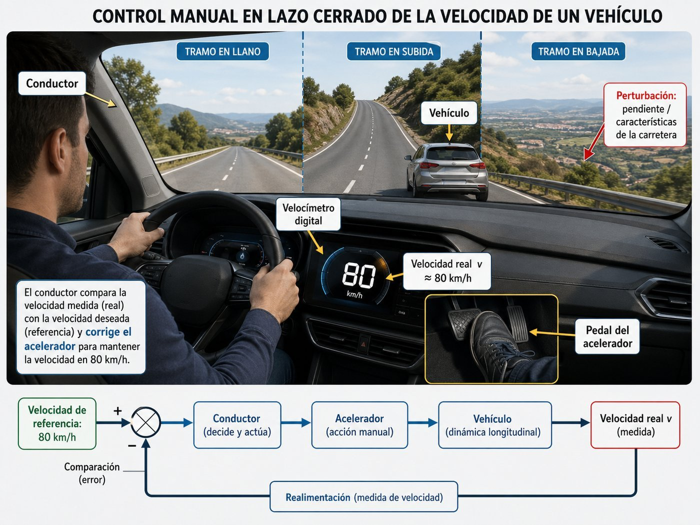
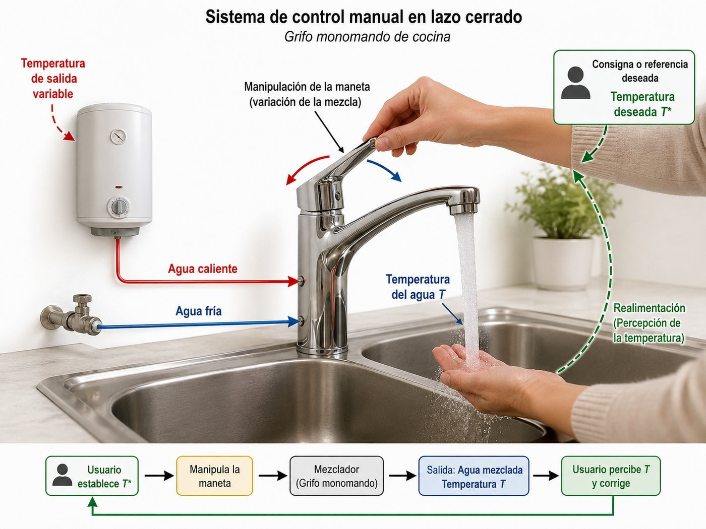
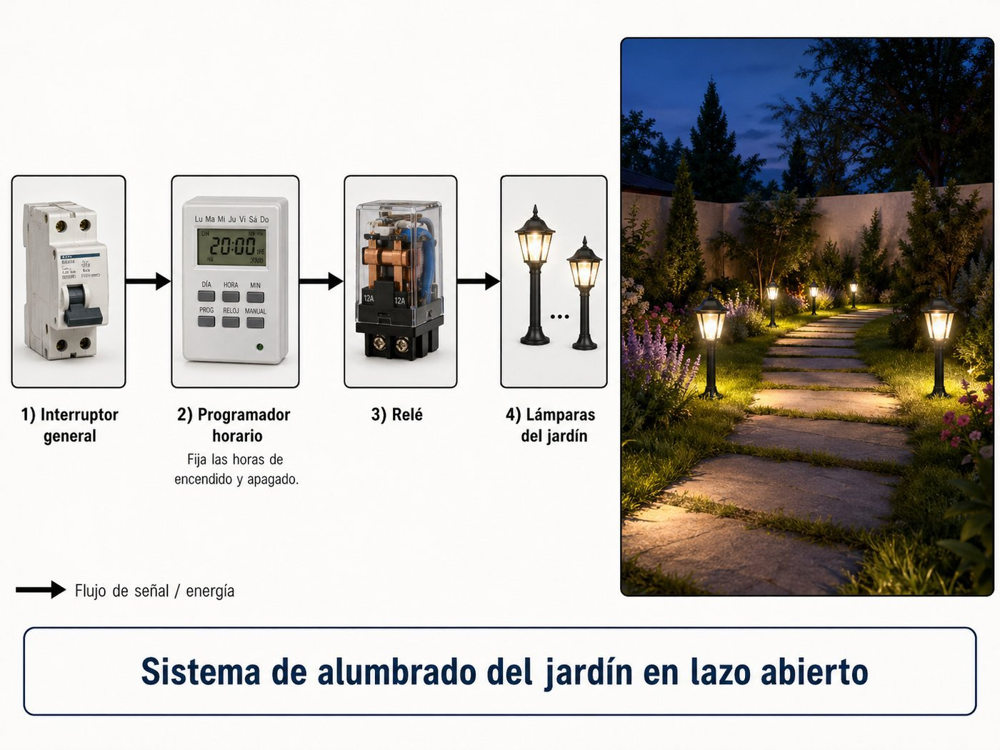

TECI II · Bloque FApartados 2-3 · Sistemas en lazo cerrado y sus elementos
2º BachilleratoPEvAU 2025–26
Lazo cerrado y sus elementos
Antes de los reguladores y antes de la estabilidad: qué es un sistema de control en lazo cerrado, qué partes lo forman y por qué se prefiere casi siempre al lazo abierto.
Apuntes 2 – 3Ponencia nov 2025 · [2][3][4][7]Enfoque cualitativo
§ 01 — Planteamiento
Un sistema de control de lazo cerrado mide la salida y la compara con lo que tú le has pedido. Si hay diferencia, actúa para corregirla. Si no la hay, deja las cosas como están. Esa idea — medir, comparar, corregir — es la columna vertebral de prácticamente todos los sistemas automáticos modernos: termostatos, control de crucero, drones, climatizadores, robots. La diferencia con el lazo abierto, que es lo que había antes, es que en el lazo abierto el sistema no se entera de lo que está pasando con la salida. Solo obedece a un horario o a una orden inicial.
Conexión con los apartados siguientes: el regulador (apdo 7) es uno de los bloques de este lazo cerrado — el que toma decisiones a partir del error. La estabilidad (apdo 6) es la pregunta de si las correcciones del lazo convergen o divergen. Y el álgebra de bloques (apdo 5) es el lenguaje matemático con el que se opera con todo esto. Aquí trabajamos los cimientos: vocabulario, dibujo, identificación.
§ 02 — Conceptos clave
Cinco palabras antes de mirar el lazo
Sistema de control
Conjunto de elementos físicos y lógicos cuyo objetivo es que una variable (temperatura, velocidad, posición, presión...) tome el valor que el usuario desea y lo mantenga ante perturbaciones.
Lazo abierto
El sistema actúa sin medir su salida. Obedece a una orden o a un horario. Sencillo y barato, pero ciego: no detecta perturbaciones ni corrige errores.
Lazo cerrado SCLC
El sistema mide la salida con un sensor, la compara con la consigna y actúa según el error. Más complejo, pero preciso y robusto frente a perturbaciones.
Realimentación
El proceso de tomar la salida medida y reinyectarla en el comparador. Es el rasgo que define al lazo cerrado. Si se resta de la entrada se llama negativa (es la habitual). Si se suma, positiva.
Controlador, actuador y planta G₁ · G₂ · G₃
La cadena del lazo directo tiene tres bloques en serie. Controlador (G₁): la inteligencia, decide la señal de control a partir del error. Actuador (G₂): ejecuta físicamente esa decisión (motor, válvula, relé). Planta (G₃): el sistema físico cuya salida se controla (depósito, vehículo, habitación).
Perturbación
Cualquier influencia externa que actúa directamente sobre la planta: una pendiente para un coche, una corriente de aire para un termostato, alguien abriendo el grifo de agua caliente. El lazo cerrado las contrarresta; el lazo abierto no.
§ 03 — Lazo abierto vs lazo cerrado
El mismo problema, dos aproximaciones
Imagina que quieres regar el jardín una hora cada noche. Hay dos formas de hacerlo. La primera es poner un programador horario que abre la electroválvula a las 23:00 y la cierra a las 00:00. La segunda es poner un sensor de humedad en la tierra y abrir la electroválvula cuando la tierra está seca, hasta que esté húmeda. La primera es lazo abierto. La segunda, lazo cerrado. Vamos a ver la diferencia con un diagrama.
● Lazo abierto
Riego por horario
Sencillo, barato, fiable mecánicamente.
Si llueve, riega igual. Si hay sequía extrema, no rectifica.
No hay error medible — el sistema no «sabe» si la tierra está seca o encharcada.
● Lazo cerrado
Riego por humedad
El sensor mide la humedad real de la tierra (señal b).
El comparador resta y obtiene el error (e = r − b).
Si llueve, la humedad sube → error pequeño → no riega. Si hay sequía → error alto → riega más.
El sistema rectifica solo. Esa es la propiedad esencial del SCLC.
§ 04 — Diagrama de bloques normalizado
El esquema universal del lazo cerrado
Cualquier sistema de control en lazo cerrado, sea termostato, robot o autopiloto de un avión, se puede dibujar con el mismo esquema. La cadena del lazo directo tiene tres bloques en serie: el controlador decide, el actuador ejecuta físicamente la decisión, y la planta es el sistema que se quiere gobernar. La perturbación entra directamente sobre la planta — son influencias externas (viento, pendiente, apertura de puerta) que actúan sobre el sistema físico, no sobre la señal de control. Si te aprendes este diagrama, te aprendes el lenguaje del bloque F.
r · referencia o consigna: el valor deseado de la salida (lo que tú le pides al sistema).
c · salida o variable controlada: lo que el sistema realmente entrega (temperatura, velocidad, posición...).
e · error: la diferencia entre lo deseado y lo medido. e = r − b.
m · variable manipulada: la señal que el regulador genera para actuar sobre la planta.
b · medida de la salida: la salida real, leída por el sensor y reinyectada en el comparador.
G₁ · controlador o regulador: la inteligencia del lazo. Recibe el error y decide la señal de control.
G₂ · actuador: lo que ejecuta físicamente la decisión del controlador (motor, electroválvula, relé, calentador, bomba...).
G₃ · planta o sistema controlado: lo físico (depósito, vehículo, horno, habitación, brazo robótico...) cuya salida queremos gobernar.
H · elementos de medida: el sensor (sonda de temperatura, encoder, fotocélula, tacómetro...) que mide la salida.
p · perturbación: señal externa de valor desconocido que actúa directamente sobre la planta (pendiente, viento, apertura de un grifo, entrada de aire frío...).
El comparador o punto de suma realiza la operación clave: e = r − b. Las dos señales que llegan al sumador deben ser de la misma naturaleza (las dos en voltios, o las dos en grados, o las dos en r.p.m.). Si el sensor entrega una tensión y la consigna está en grados, hace falta un transductor que convierta la consigna a la misma magnitud antes de la comparación.
Por qué la perturbación va sobre la planta. Las perturbaciones son influencias físicas reales sobre el sistema controlado: una pendiente mueve al coche, una corriente de aire enfría la habitación, alguien abriendo otro grifo cambia la presión del agua en la ducha. Actúan sobre la salida de la planta, no sobre la señal de control que sale del actuador. Por eso el sumador de p se dibuja después del bloque G₃, no antes.
§ 05 — Identificación de elementos
Pasar de un sistema real a un diagrama de bloques
El epígrafe [4] de la Ponencia pide algo muy concreto: te dan un sistema descrito en lenguaje natural (un coche, un termo, una cámara climática) y debes asociar cada parte a su bloque del diagrama normalizado. Es un ejercicio de abstracción, no de cálculo. La técnica es siempre la misma — vamos a verla con el ejemplo más típico.
Caso modelo · adaptado del Problema 1 de la Ponencia
El control de velocidad de un coche a 80 km/h
Un conductor circula por una carretera con tramos llanos, subidas y bajadas, y quiere mantener la velocidad fija en 80 km/h. La velocidad real se mide con el velocímetro digital. La velocidad se controla mediante el pedal del acelerador.
El sistema físico (coche, conductor, velocímetro, pedal) se traduce en un diagrama de bloques abstracto donde cada elemento ocupa un papel concreto.
Pregunta: ¿qué hay en cada bloque del diagrama normalizado?
r =
el valor deseado de la salida → 80 km/h.
c =
la salida real del sistema → la velocidad real del vehículo (lo que marca el velocímetro).
G₁ =
el controlador, la inteligencia del lazo → el conductor, que decide cuánto pisar el acelerador en función del error.
G₂ =
el actuador, lo que ejecuta físicamente la decisión → el conjunto pedal del acelerador + sistema de inyección (en un coche moderno, el e-throttle y la centralita que dosifica el combustible).
G₃ =
la planta, el sistema físico controlado → el conjunto motor + transmisión + masa del vehículo + aerodinámica, todo lo que convierte la cantidad de combustible en velocidad real.
m =
la variable manipulada que sale del controlador → la fuerza con la que se pisa el pedal (orden de aceleración).
H =
los elementos de medida → el velocímetro digital y la propia capacidad visual del conductor para leerlo.
b =
la medida de la salida → la velocidad percibida por el conductor al mirar el velocímetro.
e =
el error → la diferencia entre los 80 km/h deseados y la velocidad percibida (e = r − b).
p =
la perturbación → las pendientes y el viento, que actúan directamente sobre la planta (frenan o aceleran el vehículo) sin que el conductor las controle.
Método de identificación
Empieza siempre por r y c (consigna y salida). En cuanto sabes qué se quiere controlar, todo lo demás se deduce. Después identifica H (¿quién mide la salida?) y G₃ (¿qué es lo físico controlado?). El actuador G₂ suele ser el componente intermedio entre la decisión y el sistema físico (motor, válvula, relé, calentador, bomba). El controlador G₁ es el que decide a partir del error — el cerebro del lazo. La perturbación p es cualquier influencia externa que actúa directamente sobre la planta.
§ 06 — Ventajas e inconvenientes del SCLC
Por qué el lazo cerrado casi siempre gana
El epígrafe [2] de la Ponencia pide cuestiones teórico-prácticas sobre las ventajas del SCLC. La forma natural de aprenderlo no es memorizar una lista — es entender por qué cada ventaja existe. Aquí van las tres ventajas y los dos inconvenientes que tienes que dominar para PEvAU, cada uno con su razón.
✓ Ventaja 1
Mayor precisión
El sistema mide la salida real y corrige los errores que detecta.
El lazo abierto «cree» que la salida es la que correspondería a su orden — sin posibilidad de comprobarlo.
✓ Ventaja 2
Inmunidad a perturbaciones
Cualquier influencia externa que mueva la salida es detectada por el sensor y compensada por el regulador.
Es la propiedad más característica. Un coche con control de crucero mantiene la velocidad subiendo o bajando; sin él, la subida la frena.
✓ Ventaja 3
Respuesta más rápida
Como el regulador puede actuar con fuerza al detectar el error, el sistema alcanza la consigna antes que en lazo abierto.
Un horno con control PID llega a la temperatura deseada más rápido que uno con tiempo de calentamiento prefijado.
✗ Inconveniente 1
Posible inestabilidad
Si por retardos, desfases o un sensor mal dimensionado la realimentación se invierte, el lazo amplifica el error en vez de corregirlo y el sistema diverge.
Un sistema en lazo abierto nunca se inestabiliza por causa propia.
✗ Inconveniente 2
Mayor complejidad y coste
Hay que añadir sensor, comparador y regulador. Más componentes, más diseño, más mantenimiento.
Un sistema simple y poco crítico (un programador horario para riego ocasional) puede ser preferible al SCLC.
Resumen para examen
3 ventajas: precisión, inmunidad a perturbaciones, rapidez. 2 inconvenientes: riesgo de inestabilidad, mayor complejidad. Para responder bien una pregunta del tipo «cita dos ventajas y dos inconvenientes del SCLC frente al lazo abierto», elige una ventaja de cada categoría (precisión/perturbaciones/rapidez) — son las tres formas de decir «mejor desempeño» — y los dos inconvenientes son siempre los mismos.
§ 07 — Sensores y señales del lazo
El elemento H: cómo medir la salida
El epígrafe [7] de la Ponencia pide conocer los sensores de forma general, sin analizar el principio de funcionamiento de cada uno. Lo que hay que dominar es: para qué sirven, qué bloque ocupan y por qué son indispensables. Aquí están los más típicos en sistemas industriales y domésticos:
Variable medida
Sensores típicos
Ejemplo de aplicación
Temperatura
Sonda PTC, NTC, termopar, Pt100
termo, horno, climatizador
Velocidad de giro
Tacómetro, encoder rotativo
control de motor, cinta transportadora
Posición lineal
Potenciómetro, LVDT, encoder lineal
cilindro hidráulico, brazo robótico
Iluminación
LDR, fototransistor, fotodiodo
alumbrado automático, persianas
Presencia / proximidad
Fotocélula, sensor inductivo, ultrasonidos
puertas automáticas, contadores
Presión
Sensor piezorresistivo, capacitivo
cilindro neumático, presurización de vivienda
Caudal / nivel
Flujómetro, sonda capacitiva, ultrasonidos
depósitos, riego, climatización
Lo que sí hay que saber sobre sensores en PEvAU. Que ocupan el bloque H del diagrama. Que su salida (señal b) tiene que ser comparable con la consigna (puede hacer falta un transductor para convertirla a la misma magnitud). Que su precisión limita la del lazo: un sensor malo da una medida pobre, y por mucho que el regulador trabaje, el sistema solo puede ser tan exacto como su sensor. Y que sin H no hay lazo cerrado — H es lo que define el lazo cerrado frente al abierto.
§ 08 — Asignación de elementos a bloques
Tabla de identificación directa
La pregunta del Problema 12 de la Ponencia es directa: te dan una lista de elementos y te piden que digas a qué bloque del lazo cerrado corresponde cada uno. Esta tabla resume la regla de asignación por categorías. Vale para cualquier sistema y la puedes usar como referencia rápida en los ejercicios.
Bloque
Función
Ejemplos típicos
G₁
Toma decisiones a partir del error. Es la inteligencia del lazo.
controlador proporcional, regulador PID, microcontrolador, electrónica de control, persona
G₂
Ejecuta físicamente la decisión del controlador. Es el actuador.
motor eléctrico, electroválvula, relé, resistencia calefactora, bomba, compresor
G₃
Es el sistema físico cuya salida queremos controlar. La planta.
Mide la salida y la convierte en una señal comparable con la consigna.
sonda PTC, fotocélula, tacómetro, sensor de presión, encoder, LDR
Regla mnemotécnica
Si decide → G₁. Si ejecuta físicamente → G₂. Si es el sistema controlado → G₃. Si mide la salida → H. Esa pregunta de cuatro pasos resuelve el 90 % de los ejercicios de identificación que verás en PEvAU. Si además aparece un transductor de consigna (potenciómetro frontal, teclado), va antes del comparador en el lazo de entrada — no compite con G₂ ni con G₃.
§ 09 — Preparar la prueba
Resolver preguntas tipo Ponencia
Cinco ejercicios al estilo de los que aparecen en la Ponencia oficial de Tecnología e Ingeniería II, centrados en identificación de elementos y comparación lazo abierto / lazo cerrado. Antes de mirar la solución, lee el enunciado y trata de razonar tú: ¿qué pide el sistema controlar? ¿quién mide? ¿quién decide? ¿quién ejecuta?
Ejercicio 1 · Problema 1 de la Ponencia · identificación de elementos
Conductor manteniendo 80 km/h

Conductor que mantiene 80 km/h en una carretera con tramos llanos, subidas y bajadas: el ojo lee el velocímetro, el pie ajusta el acelerador.
Enunciado
Un conductor circula por una carretera con tramos llanos, subidas y bajadas, y quiere mantener la velocidad fija en 80 km/h. La velocidad real se mide con el velocímetro digital. La velocidad se controla mediante el pedal del acelerador.
a) Identifica los elementos del lazo cerrado: regulador (G₁), planta (G₂), elemento de medida (H), referencia (r), salida (c), señal manipulada (m), señal de error (e), señal de medida (b) y perturbación (p).
b) ¿Por qué este sistema funciona como lazo cerrado y no como lazo abierto?
Razonamiento · apartado a
Aplicamos la regla de identificación: empezar por r y c, luego H, después G₃, y por último G₁ y G₂.
r = consigna deseada → 80 km/h.
c = salida real → velocidad real del vehículo.
H = elemento de medida → velocímetro digital (más la lectura visual del conductor).
G₃ (planta) = el conjunto motor + transmisión + masa + aerodinámica (lo físico cuya salida es la velocidad).
G₂ (actuador) = el sistema acelerador (pedal + cable o e-throttle + sistema de inyección que dosifica el combustible). Es el componente que ejecuta físicamente la decisión del controlador.
G₁ (controlador) = el propio conductor, que decide cuánta fuerza aplicar al pedal en función del error.
m = señal manipulada → fuerza con la que se pisa el pedal (orden de aceleración del controlador hacia el actuador).
b = medida de la salida → velocidad percibida al leer el velocímetro.
e = error → diferencia entre los 80 km/h y la velocidad percibida (e = r − b).
p = perturbación → pendientes y viento, que actúan directamente sobre la planta (el vehículo) frenándolo o acelerándolo sin que el conductor las controle.
Razonamiento · apartado b
Es un lazo cerrado porque el conductor mide la salida (mira el velocímetro) y compara con la consigna (80 km/h) antes de actuar. Si la velocidad cae al subir una cuesta, el error aumenta y el conductor pisa más el acelerador. Si baja una pendiente y la velocidad sube, suelta el pedal. La realimentación está implementada por la vista del conductor y su decisión consciente — sin esa medida y comparación, sería lazo abierto y no podría compensar las pendientes.
Solución
a) r = 80 km/h. c = velocidad real. G₁ = conductor. G₂ = sistema acelerador (pedal + inyección). G₃ = motor + transmisión + masa + aerodinámica. H = velocímetro. m = fuerza sobre el pedal. b = velocidad leída. e = r − b. p = pendientes y viento (sobre la planta).
b) Es lazo cerrado porque el conductor mide la salida (lee el velocímetro), la compara con la consigna y actúa sobre el acelerador en función del error. Esa medida-comparación-acción es exactamente la realimentación que define el lazo cerrado.
Ejercicio 2 · Problema 2 de la Ponencia · análisis cualitativo del lazo
Grifo monomando · ¿lazo abierto o cerrado?

La persona que se ducha actúa como sensor (la piel) y como regulador (el cerebro y la mano que mueve el monomando): es un lazo cerrado manual.
Enunciado
Una persona se ducha y ajusta la temperatura del agua moviendo el monomando de la ducha. El agua sale a la temperatura ideal. Pero unos segundos después, alguien en otra habitación abre el grifo de agua caliente del fregadero, y la persona en la ducha nota que el agua está más fría. Mueve entonces el monomando hacia el lado caliente para compensar.
a) ¿Funciona como lazo abierto o como lazo cerrado? Justifica la respuesta.
b) Identifica los elementos del lazo: regulador, planta, elemento de medida, perturbación, referencia y salida.
Razonamiento · apartado a
La pregunta clave es: ¿hay alguien o algo que mide la salida y compara con lo deseado? Sí. La persona percibe la temperatura del agua con la piel (sensor) y la compara con la que quiere (su preferencia). Si la temperatura cae, el error crece y la persona reacciona moviendo el mando. Hay medida, comparación y acción correctora: es un lazo cerrado.
Importante: que el regulador sea humano no impide que sea un lazo cerrado. Un lazo cerrado lo es por su estructura — medir, comparar, actuar — no por estar implementado con electrónica. Un termostato manual y un termostato programable son los dos lazos cerrados; cambian el bloque G₁, no la naturaleza del lazo.
Razonamiento · apartado b
r = consigna → temperatura ideal deseada por la persona (un número en su cabeza, p. ej. 38 °C).
c = salida → temperatura real del agua que sale por la ducha.
H = elemento de medida → la piel de la persona (terminaciones nerviosas térmicas).
G₁ (controlador) = el cerebro de la persona, que decide cómo y cuánto mover el mando.
G₂ (actuador) = la mano + el monomando (mecanismo mezclador que ejecuta físicamente la decisión, abriendo o cerrando los pasos de agua fría y caliente).
G₃ (planta) = la red hidráulica de la ducha (tuberías, caldera, salida), donde se mezclan los caudales y se obtiene la temperatura final.
m = señal manipulada → la orden mental de mover el mando hacia un lado u otro (controlador → actuador).
p = perturbación → la apertura del grifo del fregadero, que cambia la presión del agua caliente directamente sobre la red hidráulica (la planta) sin que la persona la haya provocado.
Solución
a) Es un sistema de lazo cerrado. La persona mide la temperatura del agua con la piel (H), la compara mentalmente con la deseada y actúa sobre el monomando para corregir el error. Esa estructura medir-comparar-actuar es la firma del lazo cerrado.
b) r = temperatura ideal. c = temperatura real. G₁ = cerebro. G₂ = mano + monomando (actuador). G₃ = red hidráulica (planta). H = piel. m = orden de mover el mando. p = apertura del grifo del fregadero, que actúa sobre la planta.
Ejercicio 3 · Problema 3 de la Ponencia · sistema con sensores
Cámara climática para hortalizas
Cámara climática con sonda PT100 en el interior, electrónica de control, relé y compresor frigorífico: todos los elementos del lazo están separados y son identificables.
Enunciado
Una cámara climática para conservación de hortalizas debe mantener la temperatura interior en 4 °C. Está equipada con un compresor frigorífico, una sonda de temperatura tipo PT100 colocada en el interior, una unidad electrónica que recibe la señal de la sonda y compara con la consigna programada por el usuario en un teclado, y un relé que conecta o desconecta el compresor.
a) Dibuja el diagrama de bloques del sistema indicando las señales r, c, e, m, b y la perturbación.
b) Asigna a cada bloque los elementos físicos del sistema: G₁, G₂, H y, si lo hubiera, G₃.
c) ¿Qué perturbaciones típicas afectan a este sistema?
Razonamiento · apartado a
El diagrama es el normalizado del § 04: r → comparador → G₁ → G₂ → c, con realimentación c → H → b → comparador. Las señales son:
r = 4 °C (consigna que el usuario teclea).
c = temperatura real del interior de la cámara.
b = señal eléctrica que entrega la PT100, proporcional a c.
e = r − b (la unidad electrónica resta).
m = señal de mando al relé del compresor (encendido/apagado o PWM).
Razonamiento · apartado b
G₁ (controlador) = la unidad electrónica de control (recibe el error y decide arrancar o parar el compresor).
G₂ (actuador) = el relé + compresor frigorífico (ejecuta físicamente la decisión: cuando el relé cierra, el compresor extrae calor del interior).
G₃ (planta) = el aire del interior de la cámara (lo físico cuya temperatura es la salida controlada).
H = la sonda PT100 (mide c y entrega b).
Transductor de consigna (opcional, fuera del lazo principal) = el teclado de programación, que convierte la cifra que teclea el usuario en una señal eléctrica comparable con b. En sistemas modernos suele estar integrado en G₁.
Razonamiento · apartado c
Las perturbaciones más relevantes son: aperturas de la puerta (entra aire caliente del exterior), introducción de producto a temperatura ambiente (que la cámara tiene que enfriar), variaciones de la temperatura ambiente exterior (afecta al rendimiento del condensador del compresor) y fluctuaciones de la tensión de red. Todas ellas actúan directamente sobre la planta (el aire de la cámara), no sobre la señal de control. La realimentación detecta el aumento de temperatura interior y la unidad de control reacciona alargando el ciclo de funcionamiento del compresor.
Solución
a) Diagrama: r (4 °C) → Σ → e → G₁ → m → G₂ → → G₃ → Σ(+p) → c; realim c → H → b → Σ.
b) G₁ = unidad electrónica de control. G₂ = relé + compresor frigorífico (actuador). G₃ = aire del interior de la cámara (planta). H = sonda PT100. Transductor de consigna = teclado de programación.
c) Aperturas de puerta, introducción de producto caliente, variaciones de la temperatura ambiente exterior, fluctuaciones de la tensión de alimentación — todas sobre la planta (aire interior).
Ejercicio 4 · Problema 12 de la Ponencia · asignación directa
Asignación de elementos a bloques
Enunciado
En un sistema automático para mantener constante el nivel de agua en un depósito intervienen los siguientes elementos:
Una válvula motorizada que regula el caudal de entrada.
Un microcontrolador que recibe la señal de medida, la compara con la consigna y genera la orden a la válvula.
Un sensor capacitivo de nivel instalado en el depósito.
Un potenciómetro frontal con el que el operario fija el nivel deseado.
El propio depósito.
Asocia cada elemento al bloque que le corresponde en el diagrama normalizado.
Razonamiento
Aplicamos la regla mnemotécnica del § 08: si decide → G₁; si ejecuta físicamente → G₂; si es el sistema controlado → G₃; si mide la salida → H. El transductor de consigna va aparte, antes del comparador.
(2) Microcontrolador: recibe el error y decide. Es el cerebro del lazo → G₁.
(1) Válvula motorizada: ejecuta físicamente la decisión, dejando entrar más o menos caudal → G₂ (actuador).
(5) Depósito: es el sistema físico cuya salida (nivel) se está controlando → G₃ (planta).
(4) Potenciómetro frontal: convierte la posición que el operario fija en una tensión eléctrica que sirve de consigna → transductor de consigna (antes del comparador, fuera del lazo principal de identificación G₁-G₂-G₃).
(3) Sensor capacitivo de nivel: mide la salida real (el nivel del depósito) y entrega una señal eléctrica → H.
La separación entre actuador (válvula) y planta (depósito) es importante: la válvula ejecuta la orden de caudal, pero el nivel real del depósito depende también de la dinámica del propio depósito (geometría, salida, posibles fugas). Una perturbación típica (extracción inesperada de agua por una segunda válvula de salida) actuaría directamente sobre la planta — el depósito —, no sobre la válvula motorizada.
Solución
G₁ = (2) Microcontrolador. G₂ = (1) Válvula motorizada (actuador). G₃ = (5) Depósito (planta). Transductor de consigna = (4) Potenciómetro frontal. H = (3) Sensor capacitivo de nivel.
Ejercicio 5 · Problema 14 de la Ponencia · ventajas del lazo cerrado
Alumbrado automático del jardín

Configuración inicial · lazo abierto: programador horario y relé encienden las lámparas a horas fijas, sin medir la luz real.Tras añadir un sensor de luz · lazo cerrado: el sistema mide la iluminación real y enciende sólo cuando hace falta.
Enunciado
El alumbrado de un jardín se controla automáticamente mediante un sistema de lazo abierto compuesto por: un interruptor de corte general, un programador horario que fija las horas de encendido y apagado, y un relé que enciende las lámparas obedeciendo al programador.
a) ¿Qué elementos hay que añadir y cuáles hay que eliminar para convertirlo en un sistema de lazo cerrado?
b) ¿Qué ventajas tiene el funcionamiento en lazo cerrado frente al de lazo abierto?
Razonamiento · apartado a
La idea central es que un sistema de lazo cerrado mide la salida y compara con la consigna. Aquí la salida que importa no es la hora, sino el nivel de iluminación del jardín. Por tanto:
Hay que añadir un sensor de luminosidad (LDR o fototransistor) que mida la luz ambiente, un comparador (típicamente un amplificador operacional) que enfrente esa medida con la consigna, y un potenciómetro para fijar el nivel de luminosidad de referencia a partir del cual se quiere encender el alumbrado.
Hay que eliminar el programador horario. La decisión de encender o apagar ya no depende de la hora, sino del nivel de iluminación medido por el sensor.
El interruptor de corte general y el relé se mantienen: el primero por seguridad, el segundo porque sigue siendo necesario para conmutar la potencia eléctrica de las lámparas.
Razonamiento · apartado b
El lazo abierto programado por horario tiene un fallo evidente: enciende y apaga obedeciendo al reloj, sin importar la luz real. Si un día está nublado a las 17 h o si el cielo aún está claro a la hora de encendido programada, el sistema falla. Lo mismo ocurre con los cambios de hora estacionales y los días de mucha o poca nubosidad.
Al cerrar el lazo, el alumbrado responde directamente a la variable que importa (luminosidad). Esto es la propiedad fundamental del lazo cerrado: la salida se mantiene en el valor deseado independientemente de las perturbaciones (nublados, cambios de hora, niebla, eclipses, etc.).
Solución
a)Añadir: sensor de luminosidad (LDR o fototransistor), comparador (amplificador operacional) y potenciómetro para fijar la luminosidad de referencia. Eliminar: el programador horario, ya que el encendido pasa a depender del nivel de iluminación, no de la hora.
b) Ventaja principal: la luminosidad del jardín se mantiene en el valor deseado independientemente de las perturbaciones (nublados, cambios estacionales, niebla...). El sistema reacciona a la variable que realmente importa, no a un horario que solo aproximaba el comportamiento de la luz natural.
Ejercicio 6 · Refuerzo · convertir LA en LC
Convertir un lazo abierto en lazo cerrado
Enunciado
Una secadora de ropa doméstica funciona con un temporizador: el usuario pone 40 minutos y la secadora se apaga al terminar ese tiempo, sin importar si la ropa ha quedado húmeda o demasiado seca.
a) ¿Es lazo abierto o lazo cerrado? Justifica.
b) ¿Qué elementos hay que añadir para convertirla en lazo cerrado y qué hay que eliminar?
c) Cita una ventaja y un inconveniente del cambio.
Razonamiento · apartado a
Es lazo abierto. La secadora obedece al temporizador, no mide la humedad real de la ropa. Un día de invierno con ropa muy mojada puede quedarse húmeda; un día de verano con poca carga puede secar de más y dañar el tejido. El sistema no se entera, no hay realimentación.
Razonamiento · apartado b
Para cerrar el lazo, la salida que importa no es el tiempo, sino la humedad de la ropa. Por tanto:
Hay que añadir un sensor de humedad (electrodos que miden conductividad de la ropa, o sonda de humedad del aire de salida del tambor) — el bloque H que faltaba —, un comparador, y un selector con el que el usuario elija el grado de secado deseado (transductor de consigna). El controlador G₁ sería la electrónica que decide si seguir secando o apagar, en función del error humedad-deseada vs humedad-medida.
Hay que eliminar el temporizador, ya que el apagado pasa a depender de la humedad medida, no del tiempo transcurrido.
El actuador G₂ (resistencia calefactora + motor del tambor) y la planta G₃ (tambor + ropa cargada) ya estaban presentes en el lazo abierto — lo que cambia es que ahora reciben órdenes de un controlador que sabe cuándo parar.
Razonamiento · apartado c
Ventaja: la ropa queda con el grado de humedad deseado independientemente de la carga, del tipo de tejido o de la temperatura ambiente. Las perturbaciones (variaciones de carga, humedad ambiente, tipo de tejido) actúan directamente sobre la planta, y el lazo cerrado las compensa. Inconveniente: mayor coste y complejidad — hace falta sensor de humedad, electrónica adicional y mantenimiento de esos componentes.
Solución
a) Lazo abierto. El temporizador no mide la salida (humedad de la ropa); el sistema obedece al tiempo prefijado, sin componente H.
b) Añadir sensor de humedad (H), comparador, controlador electrónico (G₁) y selector de grado de secado (transductor de consigna). Eliminar el temporizador. El actuador G₂ (resistencia + motor) y la planta G₃ (tambor con ropa) ya estaban.
c) Ventaja: salida independiente de carga, humedad ambiente y tipo de tejido — las perturbaciones que actúan sobre la planta se compensan automáticamente. Inconveniente: mayor coste y complejidad.
Patrón común a los ejercicios. En todos los casos la resolución sigue los mismos pasos: identificar r y c, identificar H (¿quién mide la salida?), identificar G₃ (¿qué es lo físico controlado?), identificar G₂ (¿qué ejecuta físicamente la decisión?) y deducir G₁ como el componente que decide. La perturbación p actúa directamente sobre la planta. Este método resuelve la práctica totalidad de las preguntas de identificación que aparecen en PEvAU. Clave PEvAU
Practica tú · 12 preguntas con autoevaluación
Para cada pregunta, lee la situación y elige la opción que crees correcta. Tras cada clic verás si has acertado y por qué. Si te equivocas, lee la explicación y prueba con otra opción.
Pregunta 1 · vocabulario
¿Cuál es la diferencia esencial entre un lazo abierto y un lazo cerrado?
Pregunta 2 · clasificar sistemas
¿Lazo abierto o lazo cerrado?
Pregunta 3 · identificación de bloque
La sonda de temperatura ocupa el bloque...
Pregunta 4 · identificación de bloque
El regulador G₁ es...
Pregunta 5 · ventajas SCLC
Marca la afirmación que no es una ventaja del SCLC frente al lazo abierto:
Pregunta 6 · señales del lazo
¿Qué señales son r y b?
Pregunta 7 · clasificar elemento
El cilindro hidráulico, en un sistema de control de posición de su vástago, ocupa el bloque...
Pregunta 8 · clasificar elemento
Que alguien abra la puerta del horno durante la cocción es...
Pregunta 9 · método de identificación
Al traducir un sistema a diagrama de bloques, lo más eficiente es empezar por...
Pregunta 10 · sensores
Un tacómetro mide:
Pregunta 11 · transformación LA → LC
Para convertir el programador horario en un sistema en lazo cerrado, ¿qué hay que añadir?
Pregunta 12 · señal e
Si la consigna es 20 °C y el sensor mide 18 °C (sensor de ganancia unitaria), el error e vale:
Para más práctica · Ecosistema TECI II
Estos cinco ejercicios y las doce preguntas autoevaluadas cubren los cuatro problemas oficiales sobre identificación de elementos y lazo cerrado de la Ponencia 2025-26 (P1, P2, P3 y P12), más uno de refuerzo. Para los demás aspectos del bloque F, consulta los apartados monográficos:
Apartado 5 · Álgebra de bloques (epígrafe [1]). Simplificación de diagramas, asociaciones serie/paralelo/realimentación. Problemas P4 a P7 de Ponencia.
Apartado 6 · Estabilidad y error (epígrafes [5][6]). HTML estabilidad_error. Problemas P13, P14 y P15 de Ponencia.
Apartado 7 · Reguladores PID (epígrafe [3]). HTML reguladores_pid. Problemas P8 a P12 de Ponencia.
Banco de ejercicios v27 · Resueltos numéricos de los problemas oficiales y ejercicios complementarios.
§ 10 — Para recordar
Lo esencial para PEvAU
Resumen operativo · Apartados 2-3 · Bloque F
Un sistema de control de lazo cerrado (SCLC) mide la salida con un sensor, la compara con la consigna y actúa según el error. Un sistema de lazo abierto no mide la salida — obedece a una orden o a un horario.
El diagrama normalizado tiene comparador (Σ) y cuatro bloques: controlador G₁ (decide), actuador G₂ (ejecuta físicamente), planta G₃ (sistema controlado) y elemento de medida H (mide la salida). Si la consigna entra como una magnitud distinta de la realimentación, hace falta un transductor de consigna antes del comparador.
Las señales son: r (referencia), e (error), m (manipulada — del controlador al actuador), c (salida), b (medida — del sensor al comparador) y p (perturbación). El error vale e = r − b.
La perturbación p actúa directamente sobre la planta, no sobre la señal de control. Son influencias físicas externas (pendientes, viento, apertura de puerta, entrada de aire frío, alguien abriendo otro grifo).
La realimentación negativa es la habitual: la señal medida se RESTA de la consigna (e = r − b). En condiciones normales, contrarresta el error y estabiliza el sistema.
Para identificar elementos: empezar por r y c (qué se quiere controlar), luego H (¿quién mide?), después G₃ (¿qué es lo físico controlado?), después G₂ (¿qué ejecuta físicamente la decisión?) y por último G₁ (¿quién decide?). La perturbación p son influencias externas que actúan sobre la planta.
Tres ventajas del SCLC: mayor precisión, inmunidad a perturbaciones, respuesta más rápida. Dos inconvenientes: riesgo de inestabilidad, mayor complejidad y coste.
Los sensores ocupan el bloque H. En PEvAU hay que conocerlos a nivel general (qué miden y para qué) sin entrar en el principio de funcionamiento detallado.
En PEvAU, las preguntas habituales sobre estos apartados son cualitativas: identificar elementos, asociar componentes a bloques, razonar si un sistema es de lazo abierto o cerrado, citar ventajas e inconvenientes del SCLC. No suelen pedir cálculos numéricos en los apartados 2-3.